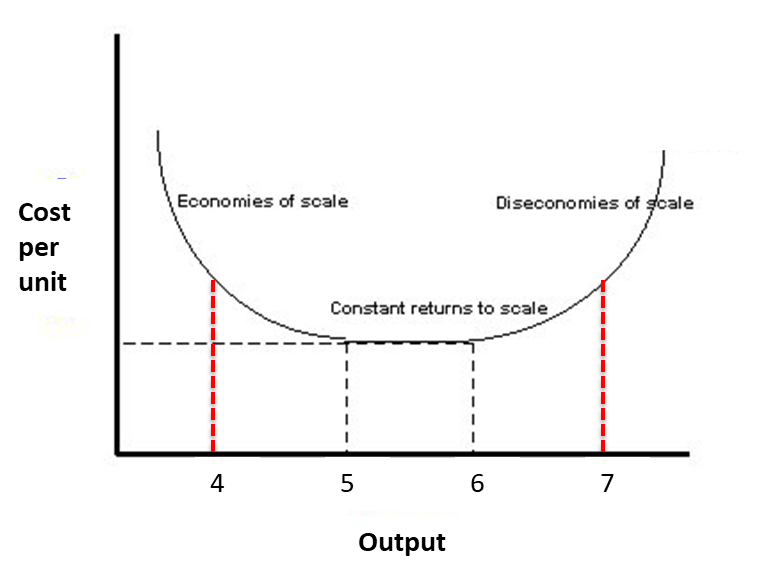

library(DiagrammeR)
# suppressPackageStartupMessages(library(widgetframe))
mermaid("
graph TB
A[Individual] --> B[Neighbourhood]
B --> C[City]
C --> D[Urban systems]
")# widgetframe::frameWidget(l)Aristotle said…
“While coming into being for the sake of living, the city exists for the sake of living well.”
The most overused figure (Nations 2009)…
In 2009 for the first time in history 2009 more than 50% of the population lived within cities
… but still true!
Source of:
economic growth - places of trade, employment and productivity
the knowledge centre - innovation and technology
but also - pandemics (!)
https://data.worldbank.org/share/widget?indicators=SP.URB.TOTL.IN.ZS&view=map

Even the definition of what is ‘urban’ can be different
Hanberry (2022)


Increasing returns to scale
Constant returns to scale:
Decreasing returns to scale
How do they affect space?
 ## Agglomeration economies
## Agglomeration economies
Two main types
Localization economies
Urbanization economies
Examples: Silicon Valley (micro-electronics), The City of London (finance), Detroit and Michigan (automobile), Seattle (aerospace), etc.

Bounded rationality (Simon 1955, 1966)
To economise!
In other words, collocation of people and firms increases efficiency.
| Heterogeneity | Differences in information, profession, culture, race, ethnicity, and economic status |
| Interconnectivity | Interdependence between people, organizations, and infrastructure in networks |
| Scaling | Self-similar economies of scale per capita in material infrastructure and increasing returns to socioeconomic activity |
| Circular causality | Interdependence dynamics between socioeconomic activities, institutions, and services |
| Evolution | Open-ended change supported by new information, investment, and collective action |
Source: Bettencourt (2021)
library(DiagrammeR)
# suppressPackageStartupMessages(library(widgetframe))
mermaid("
graph TB
A[Individual] --> B[Neighbourhood]
B --> C[City]
C --> D[Urban systems]
")# widgetframe::frameWidget(l)The Von Thünen model (The isolated state in 1826)
Source: Coe, Kelly, and Yeung (2019)
The Burgess model
The Burgess model
Source: bbc.co.uk
Why aren’t we all clustered in a huge city?
Diseconomies of scale
AKA Decreasing returns to scale
Source: Bettencourt (2021)
Central place theory
Source: Wood and Roberts (2012) adapted from Christaller (1966)
Central place theory